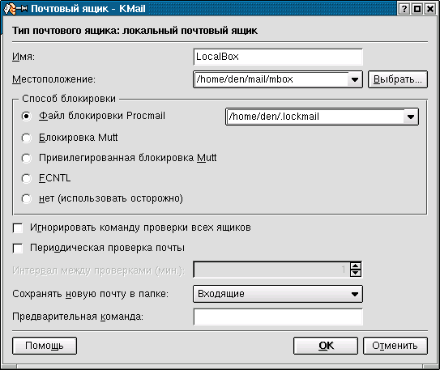

Персональный автоответчик
Денис Колисниченко
Иногда возникает потребность в создании автоответчика,
например, вам ежедневно приходит очень много сообщений и вы не
в состоянии ответить на все сразу. В этом случае, чтобы
адресант не волновался, ему будет автоматически направлен
ответ, что его сообщение обязательно будет прочитано.
В операционной системе Linux данная задача решается
довольно просто - вам достаточно лишь установить программу
procmail и потратить несколько минут на ее настройку.
Программа procmail читает переданные ей сообщения со
стандартного ввода и выполняет над ними действия, указанные в
файле .procmailrc. Действие может быть любым - удалить,
сохранить, проигнорировать или написать автоматический ответ.
Пользователь, то есть вы, может также определить свое
действие, например, поиск в теле сообщения какой-нибудь строки
и сохранение результата поиска в отдельный файл.
Прежде всего, нужно убедиться, установлена ли программа
procmail. В RedHat-подобных системах это можно сделать с
помощью команды:
rpm -qa | grep procmail
Если вывод команды пустой, значит, программа не
установлена. Для ее установки нужно установить пакет procmail.
Программа procmail является стандартной программой, поэтому
она находится на инсталляционном диске вашего дистрибутива. Я
использую дистрибутив Red Hat 7.3, в состав которого входит
программа procmail версии 3.22 (она находится на первом
инсталляционном диске). Если вы хотите обновить версию
программы, посетите сайт http://rpmfind.net. RpmFind - это
поисковый сервер пакетов RPM, который поможет вам найти
последнюю версию любого пакета для вашей системы.
Установив программу, создайте в своем домашнем каталоге
файл .forward. Этот файл используется для перенаправления
почты. Например, если в нем указать адрес электронной почты,
вся приходящая вам почта будет перенаправлена на этот адрес.
Но мы сейчас будем использовать этот файл для перенаправления
почты не на другой адрес, а на программу procmail. Добавьте в
файл .forward следующую строку:
|IFS=' ' && exec /usr/bin/procmail USER=<den>
Имя пользователя denis нужно заменить нужным вам именем.
Программу procmail можно вызывать и по-другому: с помощью
правил программы sendmail, но мы сейчас не будем рассматривать
этот способ.
Теперь перейдем к редактированию конфигурационного файла
.procmailrc, который должен находится в вашем домашнем
каталоге.
Строки файла конфигурации, которые начинаются с символа
решетки (#) считаются комментариями и будут проигнорированы
программой.
Строки, начинающиеся с последовательности символов :0 или
:0:, определяют правила, на основании которых procmail
выполнит действие над сообщением.
После символов :0 можно указать опции поиска и исполнимый
файл, которому будет передано сообщение. Общий синтаксис
такой:
:0 [опции] [: программа]
Опция H (header) означает, что условие будет применяться к
заголовку письма, а опция B - к телу. Опция D указывает
программе различать нижний и верхний регистры символов. По
умолчанию используется опция H, то есть условие применяется
только к заголовку, и верхний и нижний регистры не
различаются. Более подробно об опциях вы можете прочитать в
справочном руководстве по программе procmail (man procmail).
Условие задается с помощью регулярных выражений. Причем,
каждое условие начинается символом * и записывается в
отдельной строке. Регулярные выражения задаются как обычно, а
именно:
- Символ ^ указывает на начало строки, а $ - на ее конец
- Символ . обозначает любой символ, кроме CR (возврат
каретки)
- Символы ? и * читаются как "ноль или более раз"
- Символ + - "один или более раз"
- Символ | обозначает логическую операцию ИЛИ - x|y - x
ИЛИ y
- [a-z] определяет любой символ из диапазона a..z
- [^a-z] задает любой символ вне диапазона a..z
После условия указывается одна команда. Если первый символ
команды !, то сообщение будет перенаправлено на все указанные
почтовые адреса, а если |, то сообщение будет передано
исполнимому файлу (программе), который указан после символа |.
Вместо исполнимого файла можно указать переменную окружения, в
которую будет записан результат.
Мы уже знаем достаточно много, чтобы создать небольшой
автоответчик. Следующее правило создаст простой автоответчик,
который сообщит отправителю, что его сообщение будет
прочитано:
0:
| (formail -r; cat $HOME/message.txt) | sendmail -t
Данный автоответчик автоматически отправит сообщение из
файла message.txt по адресу отправителя. В файле вы можете
указать любую информацию, например, "Ваше сообщение будет
прочитано".
Иногда нужно создать автоответ только на некоторые
сообщения, например, только на те в поле Subject которых
указана определенная тема. Следующий автоответчик отправит
файл vacancy.txt всем, кто отправил вам сообщение, указав в
теме слово JOB:
0:
* ^Subject.*JOB
| (formail -r ; cat $HOME/vacancy.txt) | sendmail -t
Теперь усложним нашу задачу. Предположим, что нам приходит
два списка рассылки, и мы хотим, чтобы они отфильтровывались в
отдельные файлы. Мы также получаем корреспонденцию для
локального пользователя ivanov, которую нам нужно ему
перенаправить.
:0
* ^From.* [email protected]
subscribe.ru
:0
* ^Subject.*DELPHI
delphi
:0
* ^Subject.*Ivanovy
! ivanov
Первое правило будет сохранять все сообщения, полученные от
[email protected] в файл subscribe.ru. В нашем случае полный
путь к файлу не указан, поэтому файл subscribe.ru будет создан
в каталоге $MAILDIR.
Второе правило аналогично первому, только поиск
производится не по полю FROM, а по полю SUBJECT (опция D не
используется, поэтому регистры символов не различаются).
Третье правило перенаправит сообщение локальному пользователю
ivanov, который должен быть зарегистрирован на вашей машине.
Вместо имени локального пользователя можно указать любой адрес
электронной почты, например, [email protected].
Переменная окружения MAILDIR также устанавливается в файле
.procmailrc. Обычно она имеет значение $HOME/Mail.
Кроме переменной окружения MAILDIR вы можете указать
переменные окружения SENDMAIL и FORMAIL, которые содержат
полный путь к программам sendmail и formail. Переменная
окружения LOGFILE содержит имя файла протокола программы
procmail, а переменная DEFAULT - имя файла, в который будут
записываться сообщения, к которому procmail не может применить
ни одно из правил.
Вот полный листинг моего файла конфигурации .procmailrc:
PATH=$HOME/bin:/usr/bin:/usr/sbin:/bin:/usr/local/bin:.
MAILDIR=/home/den/mail
DEFAULT=$MAILDIR/mbox
LOGFILE=$MAILDIR/from
LOCKFILE=$HOME/.lockmail
:0
* ^Subject.*Privet
privets
:0
* ^Subject.*Job
| (formail -r ; cat /home/den/vakancy.txt) | /usr/sbin/sendmail -t
Проанализируем его: почта будет сохраняться в каталоге
/home/den/mail в файле mbox. Если в теме (поле Subject)
сообщения было найдено слово Privet, то все сообщения будут
сохраняться в файле /home/den/mail/privets. Если тема
сообщения содержит слово Job, автоматически будет отправлен
файл vacancy.txt по адресу отправителя. Обратите внимание на
то, то последняя команда должна быть записана в одной строке.
Если вы напишите
| (formail -r ; cat /home/den/vakancy.txt)
| /usr/sbin/sendmail -t
автоответ создан не будет. Файл vakancy.txt должен быть
текстовым (в нем содержится ответ на сообщение с темой Job) -
это не вложение.
Файл протокола, в который программа procmail запишет адрес
отправителя, тему и размер сообщения, называется from.
Программа procmail будет использовать файл блокировки,
который называется /home/den/.lockmail.
Теперь нам нужно настроить почтовые клиенты. Настройку
почтового клиента рассмотрим на примере популярной программы
Kmail. Как вы знаете, все Unix-почтовые клиенты могут получать
почту по протоколам POP3, IMAP и собирать почту в локальном
почтовом ящике. Локальный почтовый ящик называется
/var/spool/mail/<имя пользователя> (в нашем случае это
/var/spool/mail/den). Этот файл также используется программой
procmail для обработки почты, поэтому в программе Kmail в
качестве почтового ящика нужно указать файл $MAILDIR/mbox (это
наш почтовый ящик по умолчанию). Запустите программу Kmail и
выберите команду меню Настройка, Настроить Kmail. Затем
перейдите в раздел Сеть и добавьте локальный ящик. На рисунке
1 почтовый ящик сконфигурирован с учетом созданной нами
конфигурации procmail, а именно:
- Месторасположение файла - /home/den/mail/mbox
- Файл блокировки - /home/den/.lockmail
Файл блокировки нужно обязательно использовать, иначе вы
рискуете потерять почту, особенно при частой периодической
проверке новых сообщений.

Рис. 1.
Параметры почтового ящика
Кроме файла mbox мы использовали файл privets - для него
тоже нужно создать почтовый ящик.
Потом все сообщения (из обоих ящиков) будут помещены в
папку Входящие программы Kmail. Ясное дело, что нас это не
устраивает, поэтому создайте несколько папок и используйте для
каждого ящика свою папку.
Все ваши вопросы и комментарии вы можете отправить по
адресу dhsilabs@mail.
Эта статья была прислана на конкурс
статей.